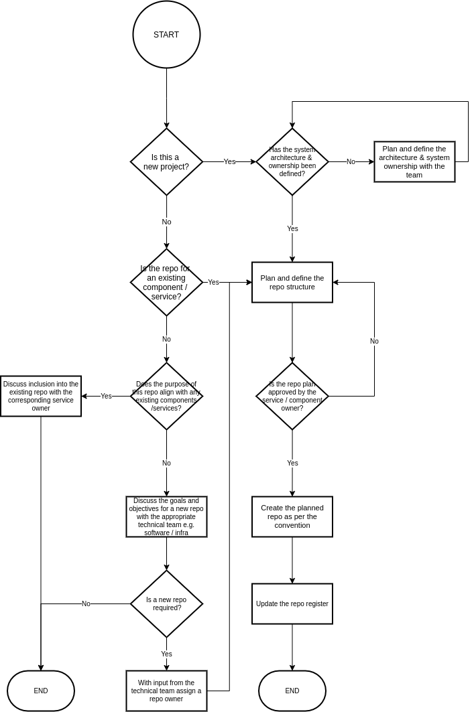

Managing Git Repositories

This page outlines the procedures and conventions for creating new repositories (repos) within the harrison.ai data engineering team. The goals of this document are:
- Allow the location of features, components, specifications or definitions to be intuitive or almost obvious.
It should not be hard to find where infrastructure is defined or where software components live. - Provide a faster on-boarding / navigation process for new engineers in the team.
- Minimise the number of repositories in existence with the aim of reducing maintenance burden. Repo proliferation can make code hard to find, leads to more links between repos and thus makes them harder to maintain. Conversely adding unrelated work / items together in the one repo also leads to confusion so it is key to strike the right balance.
- Easier to deploy, document and manage infrastructure and software components. If there are fewer sources for deployment, deployment will be easier. We need to ensure the repo convention supports our build, documentation and dependency management processes.
- Make collaboration easier and more effective.
- Ensure the repo structure aligns with the roles and responsibilities of the components that they store.
If we are able to define an effective repo naming convention and creation procedure we hope we will be able to achieve these goals.
Context
In order to determine an effective set of conventions the underlying context in which this work will reside needs to be described. As follows:
- The data engineering team is one team within the harrison.ai organisation that uses git as a method of version control.
- Github is the current git platform of choice and the processes and decisions being made need to work within this platform.
- Within the data engineering team there are two main technical specialities: software engineering and infrastructure. There is a logical separation between these two on the basis of technology usage but obviously collaboration between software and infrastructure is required for the team to be effective.
- The data engineering team while primarily building one main internal product, do support other projects within the organisation.
- Within the main internal project there are separate components that have their own roles and responsibilities as well as defined interfaces. These components are assigned owner(s) who are primarily responsible for their development. Members of the data engineering team may at one time work on a number of different components in the system and will also work on components for which they are not an owner.
Repo Naming Convention
Newly created git repositories for product development purposes will be created using the following naming convention. There are some repos which are used for other purposes, such as 1:1 notes and this handbook. These repos should adhere to this convention as much as possible.
The structure is as follows:
{department}-{project}-{service}[-{type}][-{subcomponent}]
Where:
- department: specifies the department within harrison.ai for the data engineering team this will be dataeng
- project: specifies the project for which the repo belongs and will be the agreed upon project name / acronym. If the project being worked on is the datalake the project name could be lake or datalake or dlake. This convention does not describe how projects are named or the specifics of this value; this value is to be agreed upon at the start of the project.
- service: specifies the system level component or microservice that the contents of the repo belongs to. This choice is particularly important as it aligns with the roles and responsibilities of the component owner(s). It is the component owner(s) that have decision making responsibilities within that repository.
- type (optional): this specifies the repo type which also aligns with the technical specialities
within the team. This is optional as when starting a service or project it may
be easier to combine some of the types into one repository; where they may be split out
at a later date.
Currently the value of type will be either:
- app: for application code such as Rust, Python or a combination of source code
- infra: for infrastructure code such as Terraform and/or Ansible.
- lib: for code for libraries or dependencies
- docs: if relevant dedicated documentation can be stored here more then one
- subcomponent (optional): this is an optional value in the name and is reserved for use in the event that additional granularity is required. If it is not required feel free to end the name after the component.
Examples
Say we had a component that is to provide public API capabilities for a datalake which has the project name dlake, we could have three separate repositories:
dataeng-dlake-api
dataeng-dlake-api-app
dataeng-dlake-api-infra
The first repo name dataeng-dlake-api is an example of a repo created at the start of the
dlake project and contains both the infrastructure and application code in the one repo
similarly to
dataeng-handbook-docs-examplerepo.
This repo defines the api service in the dlake project.
The remaining example repo names show how the application code and infrastructure defining the api service can be split, using the app and infra types.
In the event that there are some common or shared components that need to be used throughout a number of different components this could be specified using the service part of the naming convention. Say a number of different components all wanted to use the same authentication and authorisation mechanism we could use the following as an example:
dataeng-dlake-auth
dataeng-dlake-auth-app
dataeng-dlake-auth-infra
When creating repos for common components, consideration should be given to potential coupling between the shared or common components and other services. Strong coupling between independent components should be avoided where possible as to avoid the separation of responsibilities and concerns.
Creating New Repositories
To minimise the number of repositories being generated we need to be considered and thoughtful about the reasons for why we are looking to create a new repo. There are a couple of reasons where it is obvious that a new repository is to be generated, including potential forks for new repos.
- A new project is being generated and nothing currently exists
- A new component is required for an existing product
In both of these cases, repos should be created following the initial architecture design of a project. This ensures the definition of components and the general roles and responsibilities amongst the components are defined. In the event that a new component is added to an existing project a new repo should only be created once the project teams has agreed that the component is required and an owner has been assigned to that team.
If the roles and responsibilities of the individual components is appropriately architected and well defined then it should be clear in almost all instances which repo would be appropriate for any new feature. In the event that this is not the case, consideration should be given to the existing components, code owners and repos first. If a component and repo does exist that is a reasonable fit for the new feature then the feature should belong in that repo; if not a brief architecture review should be completed prior to creating a new repo for the feature.

The above diagram refers to a repository register as a means of storing information regarding repository owners, development / maintenance status of a repo as well as related repos.
Metadata Files
Irrespective of the selected language or technology each repo should contain the following metadata files to describe information about the repo:
README
The front page of the repo, written in Markdown the README.md provides an introduction
to, and explains the content of the repo. This file may also contain initial setup /
development instructions. For information on how to write a good README refer to
makeareadme.com.
💡TIP Shields provide READMEs with an interactive means of updating information such as build results, documentation availability, versions and many more.
CODEOWNERS
The CODEOWNERS file in github projects is to be used to specify the
owner(s) of the repo and ensure that the owners are automatically added to
code reviews. Not that this does not apply to draft pull requests.
In addition to the component owners, the relevant data-engineering team(s)
are to be added to the CODEOWNERS file as well.
CHANGELOG.md
"Friends don't make friends read commit histories" Changelogs provide a useful and handy reference tracking changes in a repo. Keep a Changelog provides a useful reference for writing good changelogs. This file is intended to be written manually and is a distilled version of the effort, features and fixes that have gone into a release.
.gitignore
The .gitignore file is used to indicate to git which files can be ignored by
the version control system.
Editor configuration files
To ensure consistency in formatting and tooling between engineers working on the same
repo it is recommended that configuration files such as .editorconfig or settings
be included or committed. The VScode settings file in .vscode can be useful to ensure
everyone working on a repo has the same settings and environment.
Semantic Versioning
All code bases, irrespective of the application, component, technology or specialisation will use Semantic Versioning. Versions are typically applied to a code base through the use of git tags, though other mechanisms may be used to integrate the version into the base e.g. use of Versioneer to build Python wheels, attaching the version from the value of the git tag as the metadata.